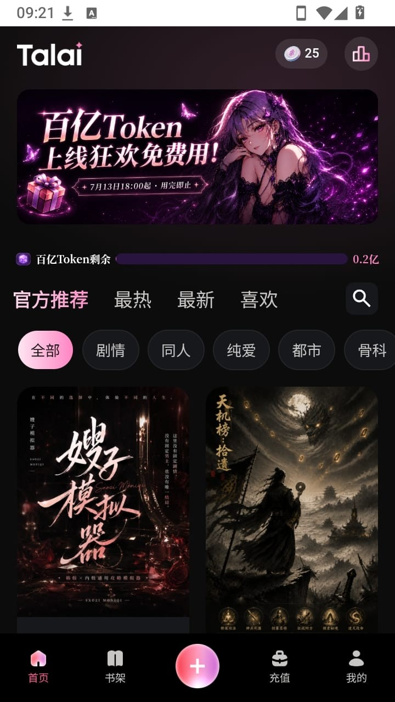
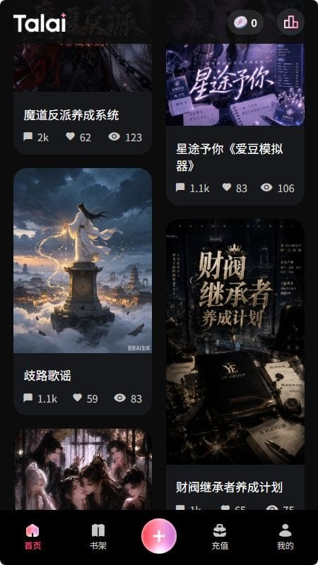

我追 Talai 这几年：它怎么从一个聊天机器人变成我的私人导演
从快速建角到精细设定，从单角色对话到多角色剧本，Talai 的迭代路线透露着一种很清晰的产品野心——让每个用户都能当自己故事的导演。
现在这版Talai官网打开，第一反应不是"今天跟哪个 AI 聊"，而是"今天搭个什么剧本"。这个变化发生得悄无声息——等我回过神来，建角已经从"选个角色聊两句"变成了填性格、写背景、定世界观的精细设定，对话已经从"一来一回"变成了有开场、有冲突、有分支的完整故事。功能链条闭环了：造角色、搭剧本、推剧情、存记录，一条线跑下来不带断的。
回过头看，这条路走得其实不慢。我翻了Talai文档，没提具体的版本号，连哪个功能在哪一版加的都没标——文档作者显然是从"当前功能全景"的角度写的，不是给老用户看的 changelog。但从功能的层级关系反推，迭代的先后顺序大概能摸出来。
最早的 Talai 应该是从快速建角起家的——输入一个名字、选个题材标签，AI 给你出个草稿角色，聊起来就行。那时候的体验应该是偏"快消"的：十分钟建个角色，聊半小时，换下一个。这种形态在早期 AI 角色扮演赛道里几乎是标配，门槛低、上手快，但也意味着角色容易模板化——"温柔大师姐""高冷总裁"这类标签一搜一大堆，撞人设是常态。
然后就有了精细建角。这个变化的核心信号不是加了多少字段，而是出现了"性格描述""背景故事""世界观设定""口头禅"这几个互相勾连的表单项。样本文档里举的那个例子很能说明问题——不是"高冷"两个字，而是"表面高冷实际心软的修仙宗门大师姐，对同门严厉，对外人客气，对自己喜欢的人笨拙，口头禅是'……随你'，但说这句话的时候通常已经心软了"。这种写法直接把 AI 对话的风格从"一个情绪标签"拉到了"一个有矛盾感的人"。这个功能加进来之后，用户造角色的成本变高了，但粘性也跟着上来了——花了二十分钟填的角色卡，你舍不得聊半小时就换。
建角做完了，下一步自然是"让多个角色一起演戏"——剧本系统。这一步的跨越比精细建角更大，因为它把 Talai 从"你和一个 AI 的对话"变成了"你当主角，多个 AI 陪你演一部戏"。样本文档里写的剧本创建四步走——定题材基调、写故事大纲、创建 AI 角色、写开场场景——本质上就是在搭一个微型的文字冒险游戏框架。每个 AI 角色都是一个完整的角色卡，有自己的人设、开场白、角色关系，开场还要留钩子让玩家想接下去。这已经不是"聊天"了，是在当编剧和导演。

剧本系统之后，团队没闲着，紧接着往"让剧情动起来"的方向死磕——冲突制造。这个功能放在剧本之后加，逻辑很顺：有了多角色框架，下一步就是让这些角色之间有张力。样本文档里列的三种制造冲突的方法（说反话、引入新变量、逼选择），还有 AI 自己制造的"自然冲突"，都是在解决同一个问题——剧情太平。有意思的是，文档里专门写了"冲突不要过度""冲突的解决方式要符合人设"——这说明团队自己踩过坑，知道如果冲突全是硬塞的、或者解决方式不符合角色之前的设定，用户的代入感会瞬间崩塌。能把这种"克制"写进官方文档，说明产品思路已经从"堆功能"转到了"调体验"。

最后补上的应该是导出备份。这个功能看起来不像前面几个那么"性感"，但它是整个链条的收尾——你花了时间造角色、搭剧本、推了几十轮剧情，然后想换手机——先去Talai下载装新的，或者想把特别满意的一段对话存下来，总得有个出口。样本文档里列了 txt、HTML、md 几种格式，还有"自动备份+手动导出双保险"的建议，看得出是从用户实际遇到过的痛点出发补的。一个应用什么时候开始认真做"数据出口"，通常意味着它已经不再把自己定位成一次性消费的工具了——它希望用户留下来，希望数据能跨设备走。
从这条迭代线里能看出团队一直在死磕什么：用户的创作自由度。快速建角是让你能"选"，精细建角是让你能"造"，剧本是让你能"搭舞台"，冲突工具是让你能"推剧情"，导出是让你能"带走成果"。每一步都在把控制权往用户手里递。那他们一直没管什么？样本文档里没提推荐算法、没提社区排行、没提付费会员体系——商业化和流量入口在现阶段显然不是第一优先级，团队把精力都放在了"让这套创作工具更顺手"这件事上。
照这个路线推，下一步大概率先在两个方向里选一个：要么是降低剧本创作的门槛——比如 AI 辅助生成故事大纲、根据题材标签自动推荐角色组合、甚至一键生成开场钩子；要么是扩大协作——多人共建一个剧本、互相邀请角色、把剧本分享出去让别人接着演。前者的逻辑是"现在搭剧本还是有点累，帮你省点力气"，后者的逻辑是"现在都是一个人演，让一群人演会不会更好玩"。两个方向都顺，但考虑到团队目前的优先级是"工具链完善"，先做辅助创作工具的可能性更大。
当然，这些都是从现有功能反推的，不当官方口径传。
我自己用 Talai 的这几年，从跟 AI 聊两句试试，到花半小时建一个精细角色，到最近开始搭短篇剧本，这个体验曲线本身就是一部迷你的版本进化史——我在跟着软件一起成长。现在它给了我一把导演椅，我开始琢磨下一部该拍什么了。关于这个软件的使用细节和功能说明，国内访问 GitHub 不太方便的时候可以走 Gitee 或 GitCode，三个仓库内容一致——GitHub、Gitee、GitCode。